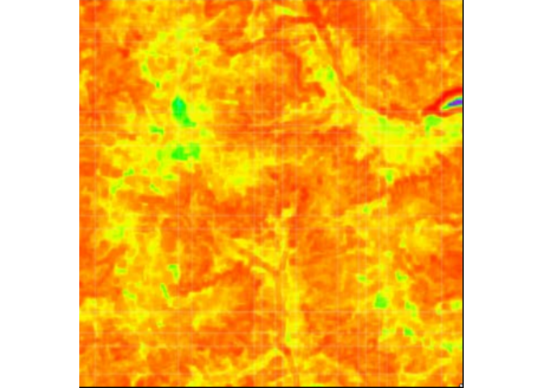

cblindplot R package is described in Rocchini et al. - https://doi.org/10.1016/j.ecoinf.2023.102045.
Installation
You can install the development version of cblindplot from GitHub with:
# install.packages("remotes")
remotes::install_github("ducciorocchini/cblindplot")Example
library(cblindplot)
my_image <- system.file("pic/imager.png", package = "cblindplot")
cblind.plot(my_image, cvd = "deuteranopia")
Citation
To cite the cblindplot package in publications, please use this paper:
Rocchini, D., Nowosad, J., D’Introno, R., Chieffallo, L., Bacaro, G., Gatti, R. C., Foody, G. M., Furrer, R., Gabor, L., Malavasi, M., Marcantonio, M., Marchetto, E., Moudry, V., Ricotta, C., Simova, P., Torresani, M., & Thouverai, E. (2023). Scientific maps should reach everyone: The cblindplot R package to let colour blind people visualise spatial patterns. Ecological Informatics. https://doi.org/10.1016/j.ecoinf.2023.102045
LaTeX/BibTeX version can be obtained with:
library(cblindplot)
citation("cblindplot")